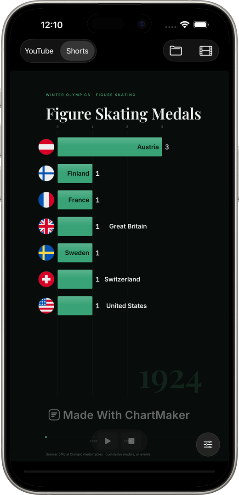

Vertical bar chart races for Shorts, TikTok and Reels
The same project, exported in 9:16, and laid out for a frame nobody ever sees whole.
One project, two shapes
Switch the picker at the top of the window from YouTube to Shorts and the chart redraws in 9:16. It is not the wide chart cropped: the engine lays the frame out again in the vertical format’s own coordinates, so the type is sized for the frame it is actually in.

A Short is never shown whole
This is the thing most vertical charts get wrong. TikTok, Reels and Shorts all lay their own interface down the edges of your video: the like and comment column on one side, the account name and caption along the bottom. Anything you put there is not smaller: it is gone. The vertical preset keeps both edges clear and lifts the year well off the floor.
Use the short title
A headline written for a 16:9 frame runs off a vertical one. The sidebar has a Short title field used only in the vertical cut: “Premier League Points” where the wide chart says “Most Points in Premier League History 1992–2026”.
The side panel is dropped on purpose
The explainer column beside the wide chart never appears in the vertical cut. There is no room, and a Short is watched without reading. You do not have to remember to turn it off: the app decides that for every export path.
Post the same race twice
One 16:9 upload for YouTube and one 9:16 cut for Shorts and TikTok is two pieces of content from one afternoon of data work, and the vertical one is usually what finds the audience.
Questions
What resolution should a vertical bar chart race be?
1080x1920 covers YouTube Shorts, TikTok and Instagram Reels. The app also exports 2160x3840 if you want the headroom.
Can I make only the vertical version?
Yes. The shape is a switch, not a second project - export whichever one you need, or both.
Make one from your own data
A native Mac app. Free to download, free to export at full resolution, one payment to remove the mark.
Download on the App Store